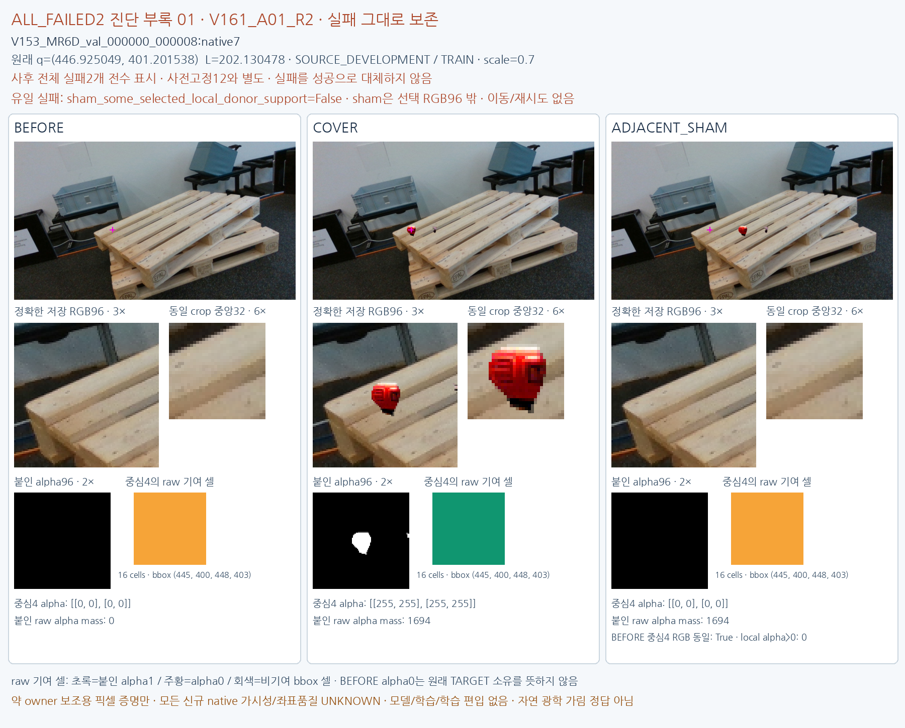
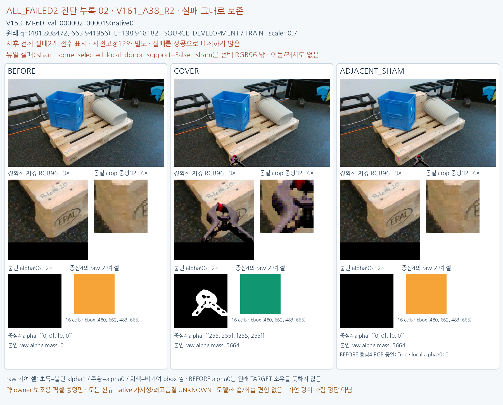

사전고정12를 바꾸지 않은 별도 부록입니다. 전체159 시도 중 두 실패를 모두 표시합니다. 두 경우 모두 sham_some_selected_local_donor_support=False가 유일한 실패이며, 원래 배치와 모든 결과를 유지합니다. 새로운 native 가시성·좌표품질은 UNKNOWN, 학습 편입은 false입니다. 픽셀 증명은 native 가시성 해결이나 자연 광학 가림 정답이 아닙니다.

